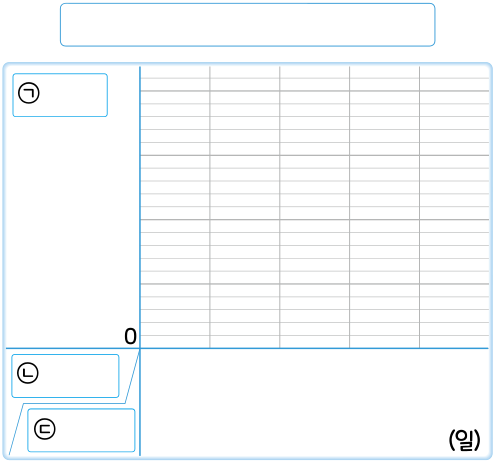

5. 자료와 꺾은선그래프
꺾은선그래프로 나타내 볼까요
전개
수학
114
쪽
수학 익힘
82
쪽
위의 표를 꺾은선그래프로 나타내는 방법을 알아봅시다.
꺾은선그래프의 가로와 세로에는 각각 무엇을 나타내야 하나요?
가로:
세로:

예
세로 눈금 한 칸은 몇 cm를 나타내야 하나요?
cm
예
1
㉠, ㉡, ㉢에는 각각 무엇을 써야 하나요?
㉠:
㉡:
㉢:
예
꺾은선그래프를 완성해 보세요.
예